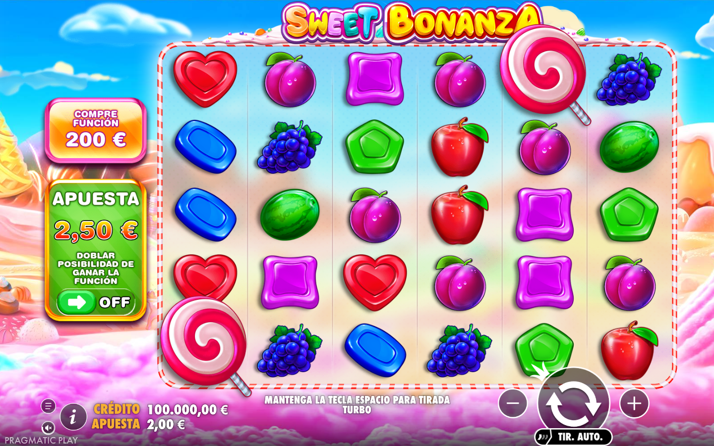
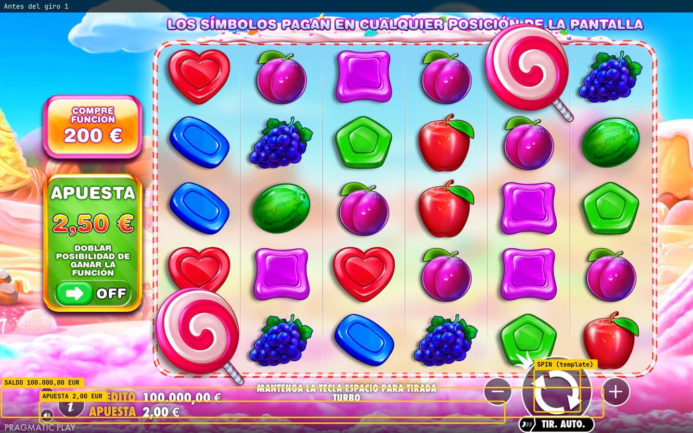
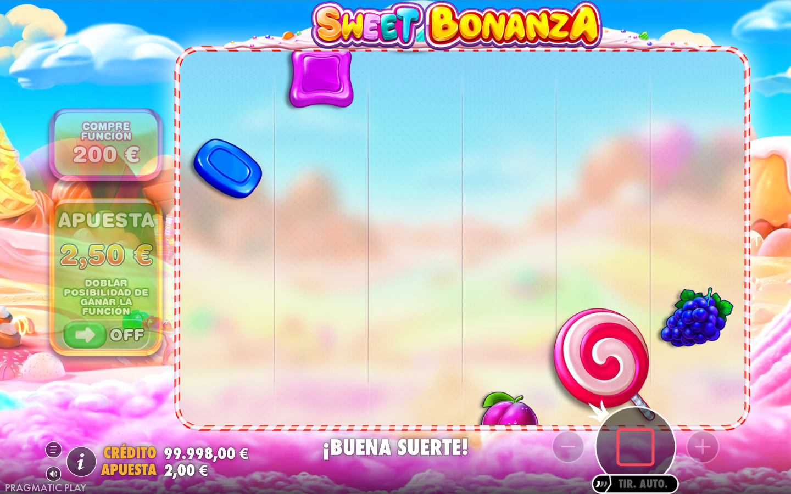
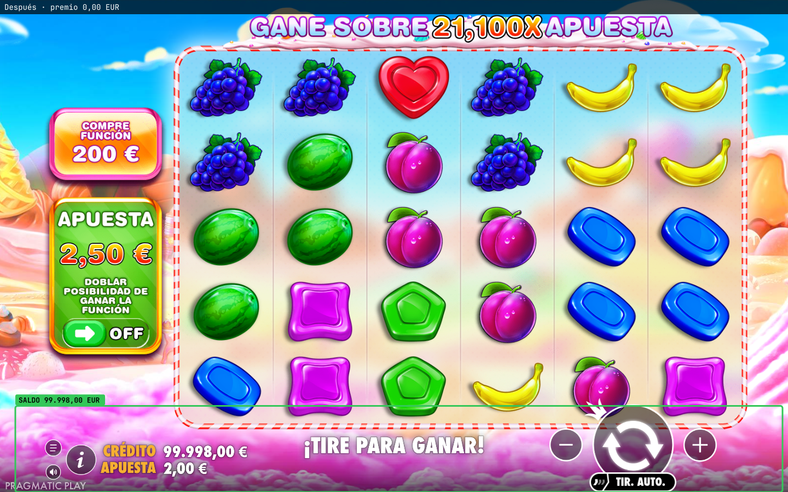

Comprobaciones
Giro 1 2/6
-
✘
Moneda en el juegoesperado PENvisto EUR
-
✔
El giro empezó (la pantalla reaccionó)esperado movimiento + doSpinvisto 40.5%, doSpin sí
-
✔
El giro terminóesperado pantalla quieta + ronda cerradavisto quieta tras 4907 ms, ronda cerrada
-
✘
Apuesta mostrada = apuesta usadaesperado 2,00 EURvisto 2,10 EUR
-
✘
Saldo en juego = antes − apuesta + premioesperado 100.000,00 EUR − 2,00 EUR + 0,00 EUR = 99.998,00 EURvisto 99.997,90 EUR
-
✘
El saldo nuevo se ve en pantallaesperado 99.997,90 EURvisto 99.998,00 EUR leído por OCR
Vídeo de la sesión
Pasos
- MODO FALLOS FORZADOS (demostración): el juego es real, pero se simula una integración rota: el mercado espera otra moneda y el proveedor cobra 0,10 más de la apuesta mostrada.
- Juego: https://demogamesfree.pragmaticplay.net/gs2c/openGame.do?gameSymbol=vs20fruitsw&lang=es&cur=EUR&jurisdiction=99&stylename=generic
- Mercado: Demo · ES/EUR · 1 giro(s)
- Abriendo el juego…
- Esperando a que el juego sea jugable (intro cerrada, HUD y botón Spin visibles)…
- — Giro 1/1 —
- Lectura en pantalla (OCR): saldo 100.000,00 EUR · apuesta 2,00 EUR · moneda EUR
- Red del proveedor: saldo 100.000,00 EUR · apuesta 2,00 EUR · Pragmatic detectado
- Spin localizado por template en (1158, 812)
- Movimiento detectado: pico 40.5% de píxeles a los 2206 ms
Capturas (4)



